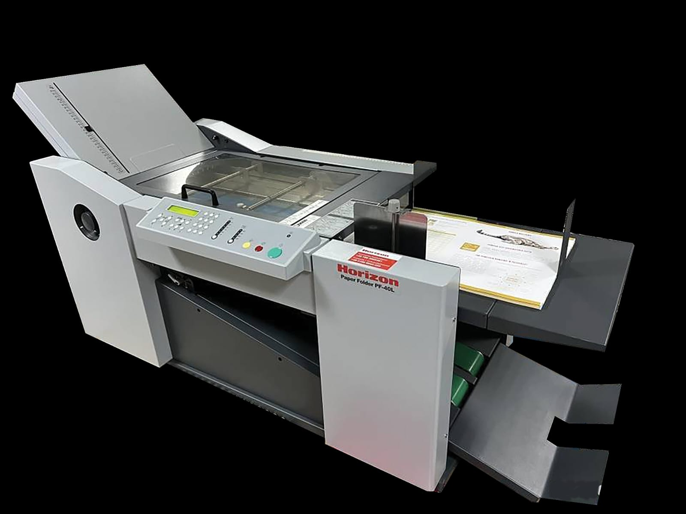
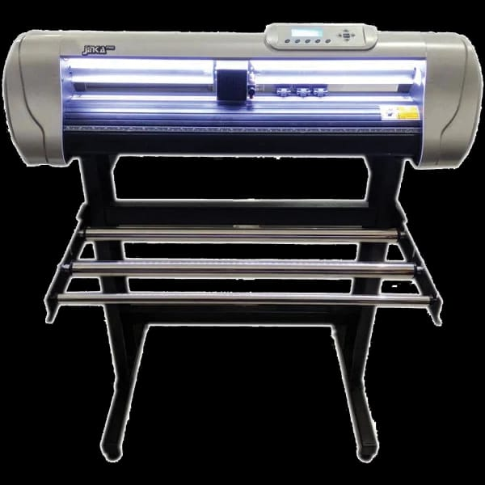

Ketepatan waktu
Berusaha menyelesaikan pekerjaan sesuai tenggat yang disepakati.
Kami bergerak di bidang percetakan dan alat tulis kantor sejak 2015. Dari Kemayoran, Jakarta Pusat, kami melayani kebutuhan perusahaan dan perorangan melalui digital printing dan cetak offset.

Mesin lipat kertas Horizon PF40L
LINE · Art media hadir untuk membantu kebutuhan cetak, dari skala kecil hingga besar. Kami mendampingi pelanggan sejak menentukan desain, proof desain, bahan, dan ukuran, sampai memilih finishing.
Konsultasi kami berikan gratis. Kamu bisa membahas pesanan dari mana pun, lalu hasil cetak dikirim ke tujuan tanpa harus datang langsung ke tempat kami.
Memenuhi kebutuhan konsumen dari layanan hingga produksi, dengan pelayanan yang unggul, sumber daya manusia profesional, dan kualitas kerja yang baik.

Setiap pekerjaan punya kebutuhan berbeda. Kami membantu membahas pilihannya sebelum masuk ke proses cetak.
Berusaha menyelesaikan pekerjaan sesuai tenggat yang disepakati.
Didukung peralatan dan tenaga kerja terlatih, dari cetak hingga finishing.
Membahas pilihan pengerjaan dan bahan dengan tetap menjaga kualitas.
Membantu pelanggan memahami pilihan dan detail kebutuhan cetaknya.
Box packaging, paper bag, shopping bag, company profile, majalah, buku, tabloid, hang tag, brosur, leaflet, flyer, dan poster.
Spanduk, banner, roll banner, X banner, tripod sign, stiker, cutting sticker, neon box, ID card, member card, RFID card, dan acrylic signage.
Kalender, agenda, map, kop surat, kartu nama, dan alat tulis kantor.
Bahas kebutuhan cetakmu bersama LINE · Art media.